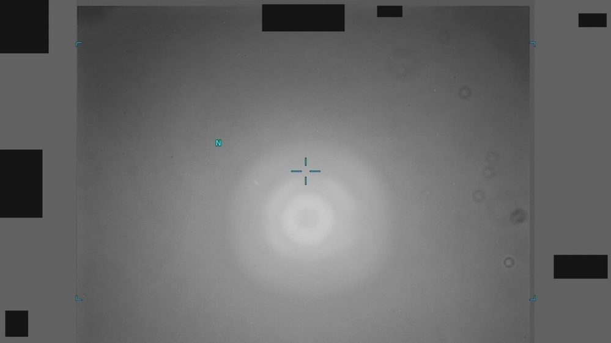
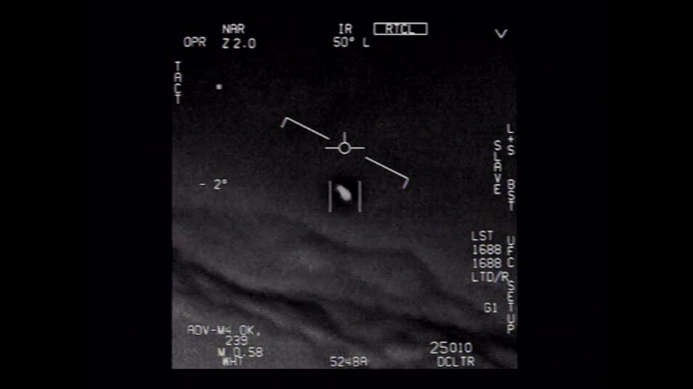
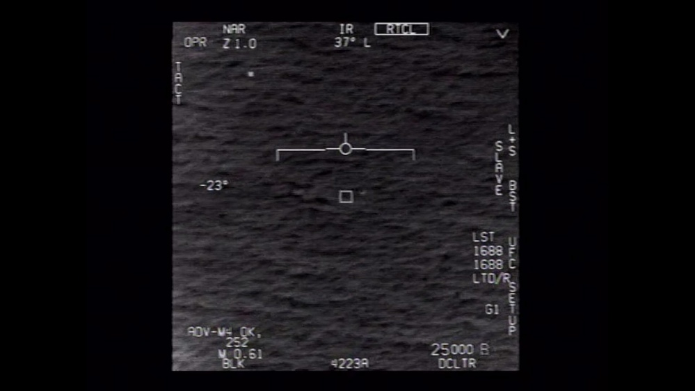
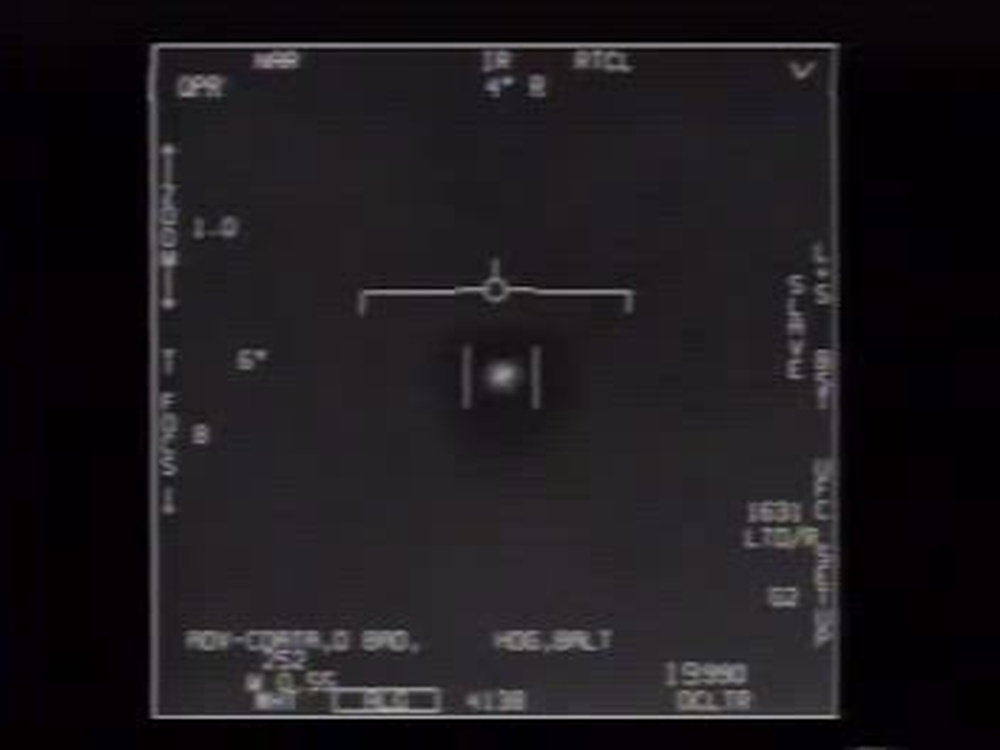
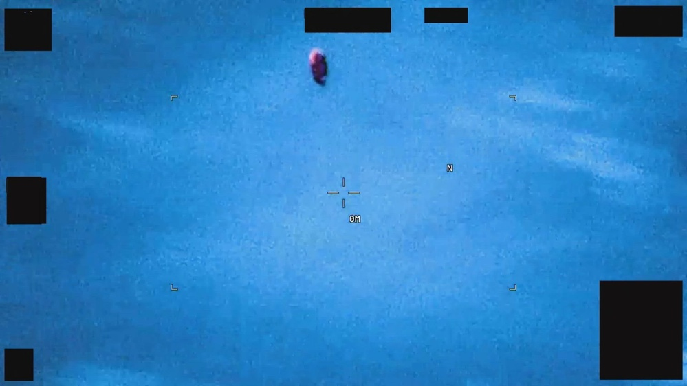
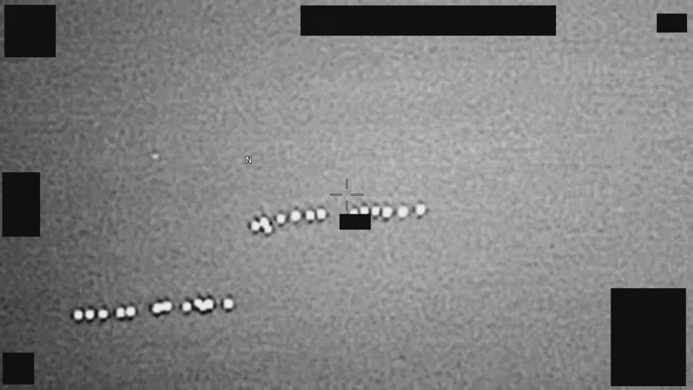

▶未解紅外線
PR-018 Europe 2024
最新公開的未解案例。影像中可能存在實體物件，但公開資料不足以完成歸因。
AARO / EUCOM · 2024 · infrared
▶經典軍方影像
GIMBAL - UAP
最常被討論的美軍 UAP 影像之一；適合搭配感測器視角與旋轉判讀一起看。
NAVAIR · 2015 · sensor footage
▶速度錯覺判讀
GOFAST - UAP
畫面速度感很強，但官方討論重點也包括視角、距離與感測器限制。
NAVAIR · 2016 · ocean tracking
▶2004 經典案例
FLIR / Tic Tac
近代 UAP 討論的入口案例之一；影像本身比長篇解釋更能讓讀者進入狀況。
NAVAIR · 2004 · infrared
▶已解析
Middle East Red Balloon
AARO 以高信心判定為消費級反光鋁箔氣球；適合對照未解案例，理解官方如何排除誤判。
AARO · 2024 · balloon
▶已解析鳥群
PR-016 Europe 2023
AARO 以高信心判定為鳥群；放在首頁是為了讓讀者看到「未解」與「已解」的差別。
AARO / EUCOM · 2023 · birds